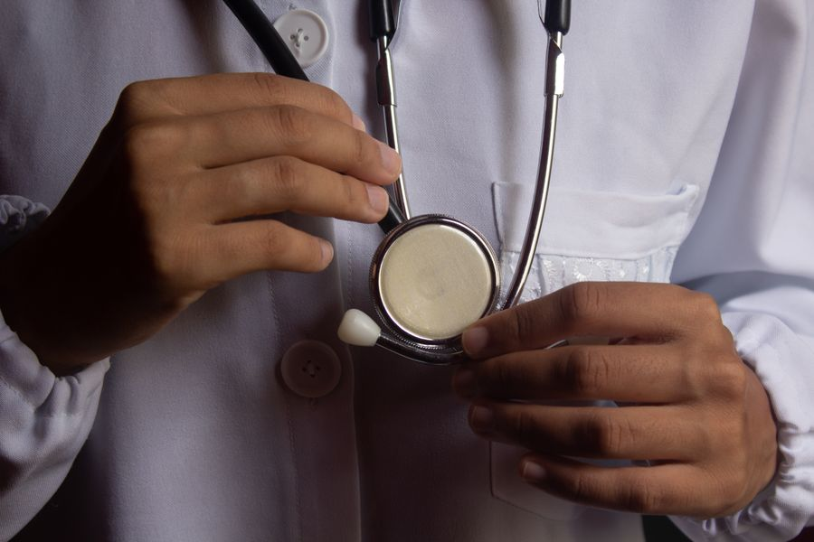
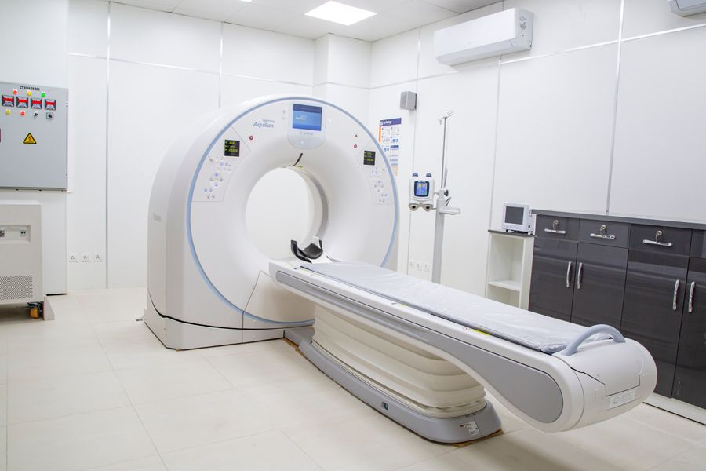
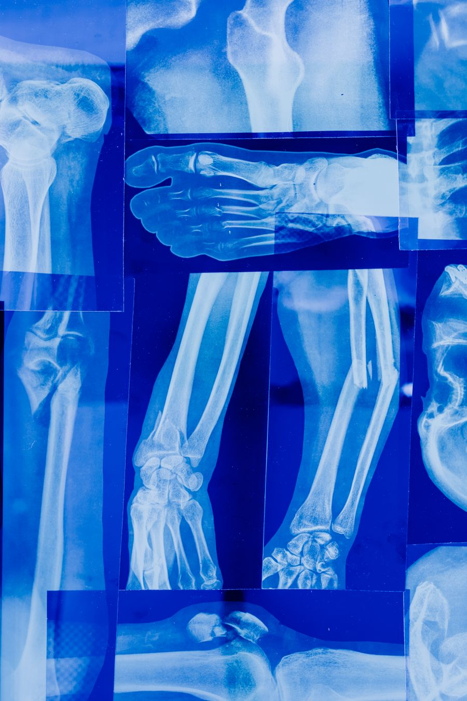
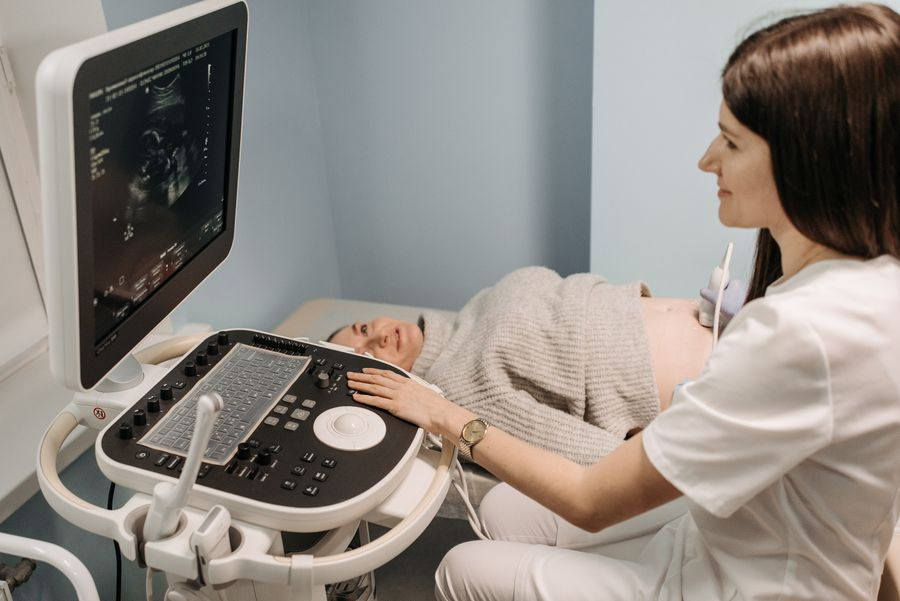
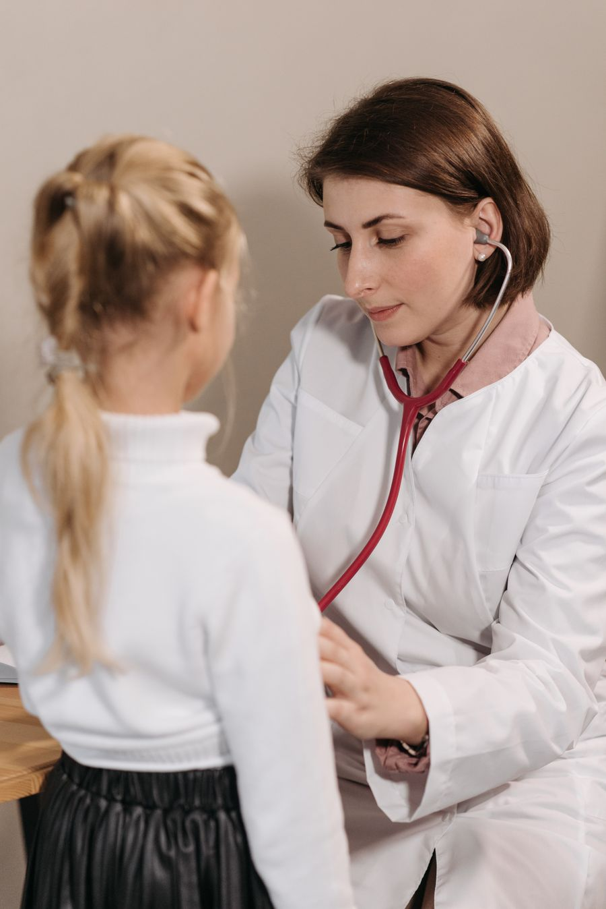
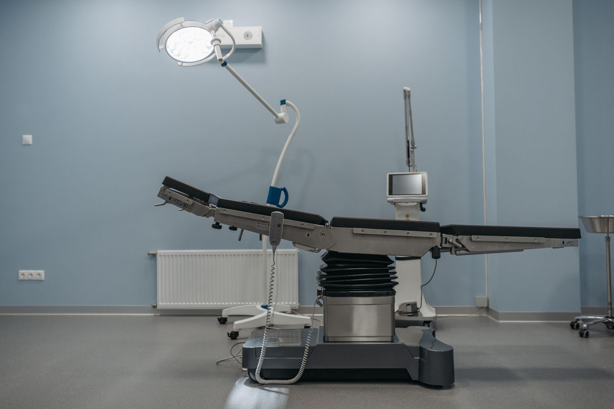
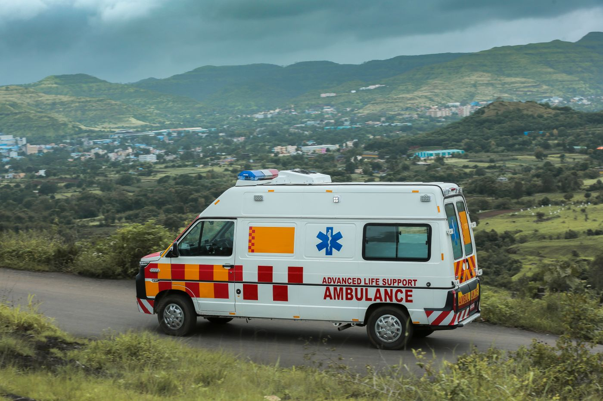
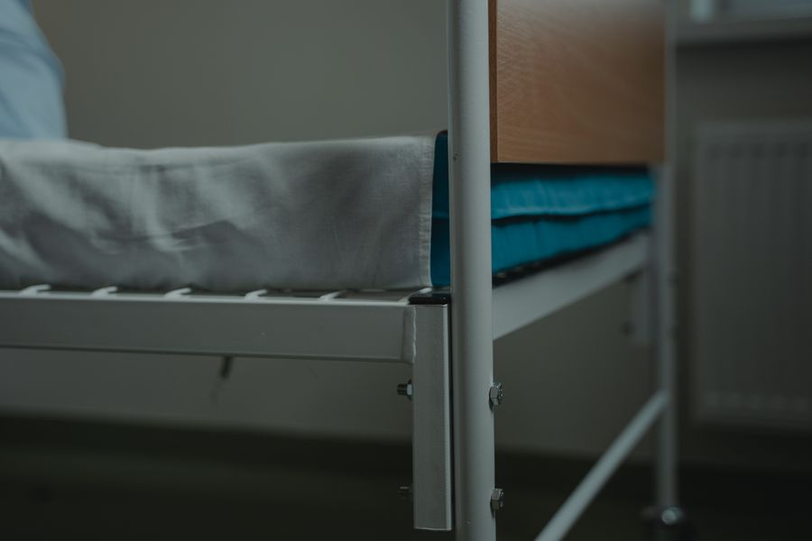
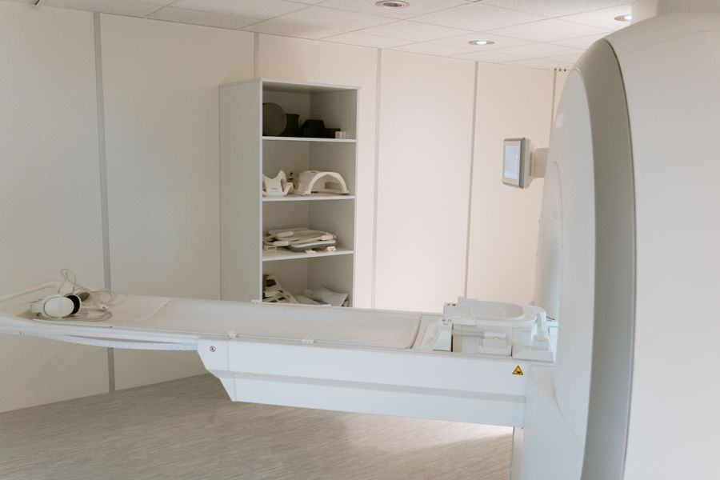
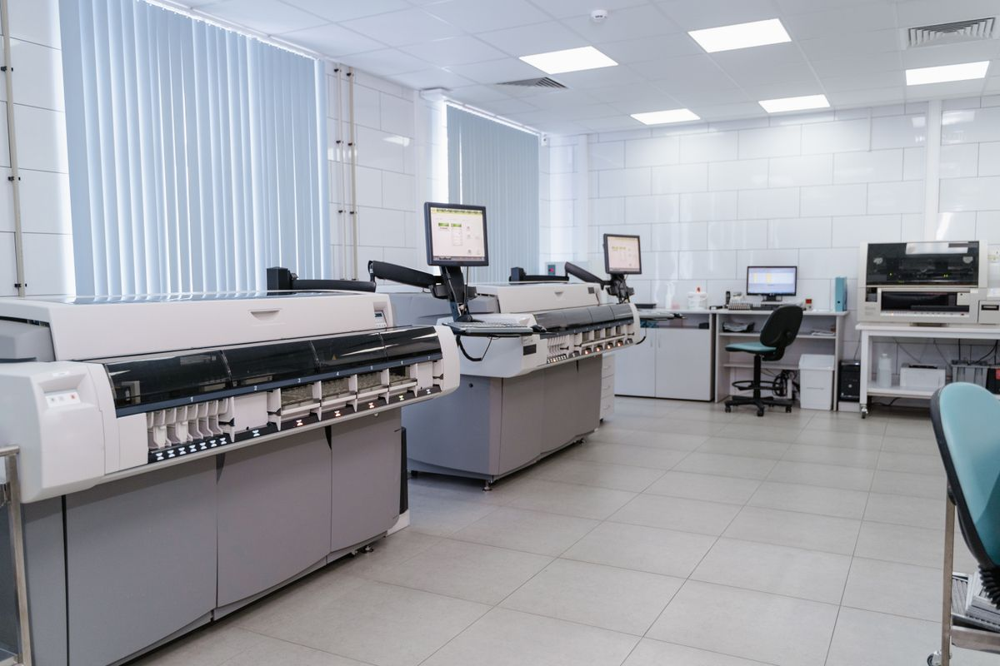

- Home
- Departments
Every department on one campus
A hospital is only as good as the distance between its departments. At Vel Hospital the cath lab, the theatre complex, the ICU and the laboratory are all within the same building — which is why a cardiac patient can go from the emergency door to a stent without leaving the floor.

Cardiology & Cath Lab
The busiest department in the building. Six consultants, a single-plane catheterisation laboratory and a coronary care unit of twelve beds. Primary angioplasty for a heart attack is available at any hour — the on-call interventional team is contracted to be scrubbed within thirty minutes of the call.
- Angiography, angioplasty and stenting
- Permanent pacemaker and ICD implantation
- 2D Echo, treadmill test, Holter and ambulatory BP monitoring
- Heart failure and hypertension clinics on Tuesdays and Fridays
- Twelve-bed coronary care unit with central monitoring

Neurology & Neurosurgery
Stroke is a race against the clock, so the pathway here is deliberately short: triage, CT and a neurologist's opinion inside twenty minutes of arrival, with thrombolysis started in the scanner room itself where it is indicated. The 1.5 Tesla MRI runs from 7 AM to 10 PM and is on call overnight.
- Acute stroke thrombolysis and a six-bed stroke unit
- EEG, nerve conduction studies and evoked potentials
- Epilepsy, Parkinson's and headache clinics
- Neurosurgery for trauma, tumours and spinal decompression
- 1.5T MRI and 128-slice CT on the same floor

Orthopaedics & Joint Replacement
Around four hundred joint replacements a year, plus the steady flow of road-traffic fractures that any hospital on a highway sees. Physiotherapy begins the morning after surgery — not a week later — which is the single biggest reason our knee replacement patients are usually walking with support by day three.
- Total knee and hip replacement, including bilateral
- Arthroscopic surgery of the knee and shoulder
- Complex trauma, poly-trauma and non-union fracture care
- Spine surgery — discectomy, fusion and vertebroplasty
- In-house physiotherapy and rehabilitation gym

Obstetrics & Gynaecology
Roughly six hundred and fifty deliveries a year. Two labour rooms, a dedicated obstetric theatre and a Level II nursery sit on the same floor, so a baby who needs help never travels further than thirty metres. Birth partners are welcome in the labour room, and painless delivery is available on request.
- Antenatal care, anomaly scanning and foetal Doppler
- Painless (epidural) delivery and elective caesarean
- High-risk pregnancy — diabetes, hypertension, twins
- Laparoscopic hysterectomy and fibroid surgery
- Infertility evaluation, PCOS and menopause clinics

Paediatrics & Neonatology
Newborn to sixteen. The twelve-cot neonatal unit handles babies from thirty weeks onwards, with ventilators, CPAP and phototherapy, and a neonatologist resident in the hospital every night. The outpatient area has its own entrance so that sick children are not queued alongside adults.
- Twelve-cot Level II NICU with ventilator and CPAP support
- Full national immunisation schedule plus optional vaccines
- Growth, development and nutrition clinics
- Paediatric asthma and allergy management
- New-born hearing screening and jaundice follow-up

General & Laparoscopic Surgery
Four modular theatres with laminar airflow, HEPA filtration and their own sterile supply department. Most gallbladder, hernia and appendix operations here are done through keyhole incisions, which is why the average stay for a laparoscopic cholecystectomy is a night and a morning rather than a week.
- Laparoscopic gallbladder, hernia and appendix surgery
- Thyroid and breast surgery
- Piles, fissure and fistula — including stapler procedures
- Diabetic foot care and wound management
- Four modular theatres with laminar airflow

Emergency & Trauma Care
Trichy Main Road is a highway, and the emergency department is built for what a highway produces. Six triage bays, a two-table resuscitation room and a CT scanner forty steps away. Four ambulances are stationed here, two of them advanced life support with a paramedic and a ventilator on board.
- Six triage bays and a two-table resuscitation room
- Four ambulances — two ALS, two basic life support
- Duty consultant, anaesthetist and radiographer on site all night
- Poisoning, burns and snakebite protocols with stocked antivenom
- Direct lift access to theatre, cath lab and ICU

Nephrology & Dialysis
Fourteen dialysis stations running three shifts a day, six days a week, including two isolation stations for hepatitis-positive patients. Regular patients keep the same chair and the same technician wherever possible, which matters more than it sounds when you are here three times a week for years.
- Fourteen stations, three shifts daily, six days a week
- Two isolation stations for HBsAg and HCV positive patients
- Emergency and overnight dialysis for inpatients
- AV fistula creation and permacath insertion
- Chronic kidney disease and renal diet clinics

Pulmonology & Sleep Medicine
Coimbatore's cotton and textile industry leaves its mark on a lot of chests, so the occupational lung clinic here is busier than most. Pulmonary function testing, bronchoscopy and a two-bed sleep laboratory for suspected obstructive sleep apnoea.
- Pulmonary function tests and six-minute walk testing
- Video bronchoscopy and pleural procedures
- Asthma and COPD clinics with inhaler technique training
- Two-bed sleep laboratory and CPAP titration
- Occupational lung disease and tuberculosis follow-up

Diagnostics & Laboratory
NABL-accredited, open round the clock, and running its own internal quality control twice a day against reference sera. Routine blood reports reach your phone the same evening. Radiology covers a 128-slice CT, a 1.5T MRI, digital X-ray, mammography and four ultrasound machines.
- Biochemistry, haematology, serology and clinical pathology
- Microbiology with culture and antibiotic sensitivity
- Histopathology and cytology reporting
- 128-slice CT, 1.5T MRI, digital X-ray and mammography
- Reports on your phone the same day for routine tests
The rest of the building
Smaller departments, but each with its own full-time consultant and a fixed outpatient schedule.
| Department | What it covers | Consultants | OPD timing |
|---|---|---|---|
| General Medicine | Diabetes, hypertension, thyroid, fever and infection workup | 8 | 8 AM – 8 PM, Mon–Sat |
| Gastroenterology | Endoscopy, colonoscopy, liver disease, acidity and IBS | 3 | 10 AM – 4 PM, Mon–Sat |
| Urology | Kidney stones, prostate, laser lithotripsy, TURP | 2 | 11 AM – 4 PM, Mon, Wed, Fri |
| ENT | Ear surgery, sinus endoscopy, tonsils, hearing tests, vertigo | 3 | 9 AM – 5 PM, Mon–Sat |
| Ophthalmology | Cataract surgery, retina screening, glaucoma, spectacles | 2 | 9 AM – 5 PM, Mon–Sat |
| Dermatology | Skin, hair and nail disorders, allergy patch testing, minor procedures | 2 | 10 AM – 3 PM, Tue, Thu, Sat |
| Dentistry & Maxillofacial | Fillings, root canal, extraction, jaw fractures, dentures | 2 | 9 AM – 6 PM, Mon–Sat |
| Physiotherapy & Rehab | Post-surgical rehab, stroke rehab, sports injury, back and neck pain | 4 therapists | 7 AM – 8 PM, Mon–Sat |
Start with general medicine
If your symptoms do not obviously belong anywhere, book a general medicine slot. The physician will examine you and refer you on internally — at no extra consultation charge on the same day.